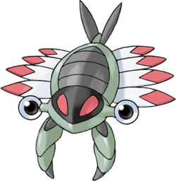

Anorith #347
Anorith
DE 2
Niveau 1
Taille P
Type  -
- 
Classe d'armure 13
Dé de vie d6
Points de vie 17
Vitesse 7.5 m, nage 9 m
| FOR | DEX | CON | INT | SAG | CHA |
|---|---|---|---|---|---|
| 13 (+1) | 16 (+3) | 12 (+1) | 6 (-2) | 10 (+0) | 10 (+0) |
Jets de sauvegarde Constitution
Compétences Survie
Vulnérabilités 

Résistances 

Sens perception des vibrations 9 m
Talents
Armurbaston. TODO TRADUIRE This Pokémon is immune to extra damage dealt by a Critical Hit.
Talents cachés
Glissade. TODO TRADUIRE This Pokémon's swim speed is doubled in rainy conditions.
Évolution
Anorith peut évoluer en Armaldo à partir du niveau 10. Quand il évolue, il gagne 8 points de caractéristiques. Il ne peut pas dépasser 20 dans une valeur de caractéristique.
Capacités
Niveau 6 Griffe Acier, Pouvoir Antique
Niveau 14 Tranche, Eclategriffe